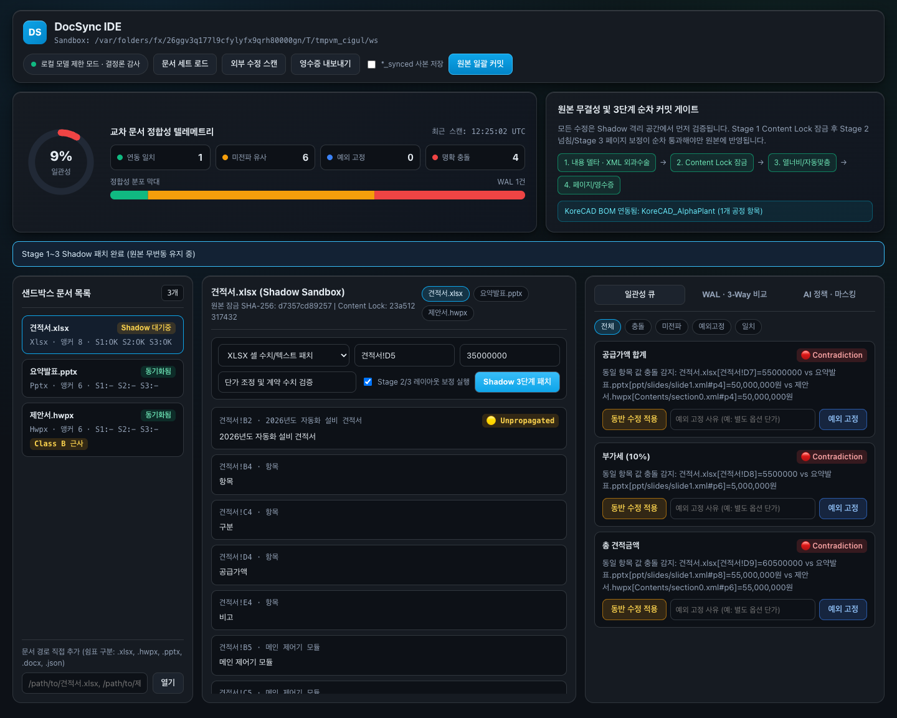

What Is DocSync IDE v0.2.0 and How Does It Prevent Quote & Proposal Mismatches?
DocSync IDE is a Rust-first desktop consistency engine and suite built by DH Labs (610-16-92926) that opens 4 Office formats (.xlsx, .docx, .pptx, .hwpx) inside an isolated Shadow Sandbox in under 3000 ms with 0% silent overwriting on ambiguous similarities. Version 0.2.0 evaluates 9 lookup and aggregate formulas (XLOOKUP, VLOOKUP, HLOOKUP, INDEX, MATCH, IFNA, SUMPRODUCT, AVERAGEIF, AVERAGEIFS) in Pure Rust, patches exact (table_index, row_index, col_index) XML cells, commits changes in 3 locked stages with automatic .docsync/backups/ protection, and masks 7 PII patterns locally ($39 global 1-PC perpetual — 39 USD on Gumroad, 0 USD recurring fee, or ₩49,000 / 49000 KRW on SmartStore, 30-day defect refund).
Why Updating One Excel Quote Silently Breaks Your Word, PowerPoint, and Hangul Deliverables
1. Three Ways Multi-Document Edits Fail Right Before Delivery
When pricing or delivery dates shift late in a deal, manual edits across spreadsheets, decks, and contracts introduce three recurring failure modes:
Shadow Workspace + 4-State Verdict
DocSync IDE parses all four Office formats in under 3000ms without modifying original disk files, separating Synced, Unpropagated, Locked, and Contradiction items.
Pure Rust Formulas + Cell Coordinates
Recalculates XLOOKUP and SUMPRODUCT dependencies locally while letting you click exact (table, row, col) cells in .hwpx/.docx tables.
Content Lock + Automatic Backups
Locks text hashes in Stage 1, inspects overflow in Stage 2, and exports safely to .docsync/backups/ or *_synced side-by-side deliverables.
2. Live Workbench, Demo & Privacy Redaction Architecture
25-Second Workbench Demo
Inspect 4-state mismatch cards, run Pure Rust recalculation, and verify Stage 1-3 safe commits without touching original disk files.

Zero Silent Overwriting Across Documents
Ambiguous similarities require explicit Co-Edit approval or Exception Locking with an audit reason.

100% Offline Core with Deterministic PII Guard
Run completely offline with zero AI keys, or mask 7 sensitive ID/contact patterns before calling BYOK endpoints.
3. What Shipped in DocSync IDE v0.2.0?
| Subsystem | Legacy Risk | DocSync IDE v0.2.0 Implementation |
|---|---|---|
| Excel Formula Evaluation | Stale cached values when LibreOffice is absent | Pure Rust evaluator adds XLOOKUP, VLOOKUP, HLOOKUP, INDEX, MATCH, IFNA, SUMPRODUCT, AVERAGEIF(S), cross-sheet refs |
| Word & Hangul Tables | String replacement alters identical text in unrelated rows | Surgical XML patcher targets exact (table_index, row_index, col_index) and empty cells cleanly |
| External Edits Safety | IDE overwrites newer edits made in desktop Excel | 3-Way external diff check + Coalesced Audit WAL detects out-of-band modifications |
| Windows & macOS Release | Unsigned binaries or console flash on Windows GUI launch | Apple Notarized macOS arm64 DMG + Windows x64 zero-console portable ZIP + doc-sync-mcp |
Honest Technical Boundaries (Class B / Class C)
.hwpxLayout Previews (Class B): Non-Hancom platforms strip stale<hp:linesegarray>caches cleanly on write and display honest approximate layout status; confirm final print pagination inside Hancom Office when exact page counts matter.- 3D Sheet Ranges & Protected Files (Class C): 3D sheet ranges (
Sheet1:Sheet3!A1), VBA UDFs, external workbook references, password/DRM files, and legacy binary.hwpfiles are preserved safely or refused with explicit warnings.
4. Standalone CLI & Agent Automation via doc-sync-mcp
Every license also bundles the native Rust binary doc-sync-mcp for headless audit pipelines and AI coding assistants over stdio JSON-RPC. You can run read-only scan diagnostics across project folders, verify formula recalculation parity against LibreOffice/Excel, and inspect Stage 1–3 commit hashes in CI without opening the GUI.
Licensing & Verification Guarantees
- Dual Activation Modes: Activate offline via DH Labs Ed25519 signed keys (SmartStore/Kmong) or verify Gumroad keys cleanly on localhost.
- Transparent Backups & Rollback: Every accepted batch writes timestamped copies inside
.docsync/backups/before replacing deliverables.
5. Frequently Asked Questions
Does DocSync IDE require an AI API key or subscription?
No. Every consistency check, Excel formula calculation, surgical XML table edit, and backup workflow runs offline with zero API keys or monthly subscription.
What is included in the $39 USD Gumroad license?
You receive the Apple Notarized macOS arm64 DMG, the Windows x64 Portable ZIP, SHA256SUMS, install guide, doc-sync-mcp stdio CLI, and a unique perpetual 1-PC license key.
How does DocSync IDE protect existing Excel charts, VBA macros, and Hangul layout?
DocSync IDE operates inside a copy-on-write Shadow Sandbox and applies surgical XML deltas to targeted table cells and formula cells, preserving charts, embedded media, styles, and vbaProject.bin untouched while exporting timestamped backups before overwrite.
Which operating systems and architectures are supported in v0.2.0?
macOS 13+ Apple Silicon (arm64 Apple Notarized DMG) and Windows 10/11 64-bit (x64 Portable ZIP) alongside the standalone doc-sync-mcp stdio automation CLI.
What happens when a number appears in two ambiguous table rows?
DocSync IDE refuses silent overwriting, flags the row inside the 4-state Contradiction or Unpropagated queue, and requires explicit Co-Edit approval or a locked exception rule with an audit reason.